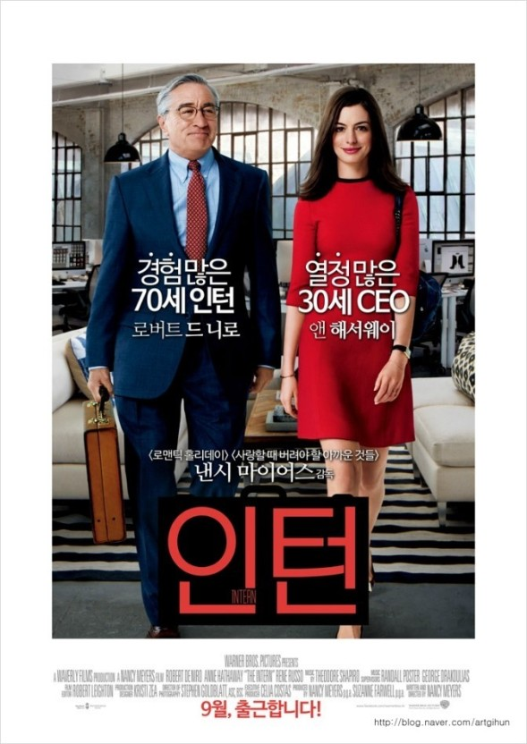

<-Back to Home
HEALING & ROMANCE

- 인턴
- 가장 좋아하는 힐링 영화이다.
- 젊은 ceo 줄스 오스틴과 퇴직 후 70세에 인턴으로 재취직한 벤의 이야기인데,
사람과 사람 간의 따뜻함을 느낄 수 있는 영화였다.

- 어바웃타임
- 언니가 가장 좋아하는 영화라며 함께 보자고 해서 보게 되었던 영화
- 시간여행능력을 가진 남자가 주인공인 영화인데,
소중한 사람들에 대한 사랑을 담은 따뜻한 영화이다.
- 아메리칸 셰프
- 우리 가족은 누군가가 '오늘 이 영화 같이 보자!'라고 외치면
그날 저녁에 거실에서 다같이 영화를 보곤 한다.
이 영화도 그런 식으로, 오빠가 보자고 해서 보게 된 영화이다.
- 요리사라는 자신의 일에 대한 자부심과 사랑을 느끼는 칼이
아들과 동료 한 명과 함께 푸드 트럭을 시작하면서 가족 간의 유대도 깊어지고
시련을 딛고 일어나는 이야기이다.
[TOP]